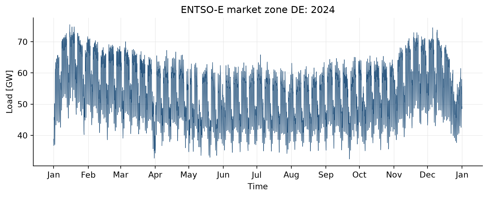
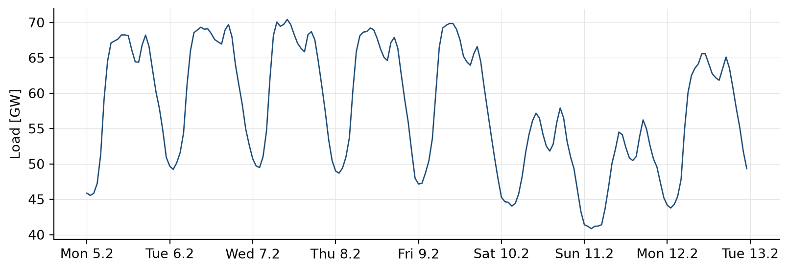

You can use the function download_new_data from spotforecast2_safe.downloader to drop a real electric-load time series for an ENTSO-E market zone into a local CSV, and you can explain how this function guarantees CR-2 (determinism) despite the live API call.
2.1 What the running example in the report was about
The running example in the companion report generates a synthetic load series, because the document must render deterministically and offline. For a course that wants to teach real engineering practice, we replace the synthetic series with real data from the ENTSO-E Transparency Platform — the central database of the European Network of Transmission System Operators for Electricity. ENTSO-E publishes hourly the actual and forecast load for every market zone in Europe.
2.2 AI Act link
Data origin is a central concern of the AI Act: Art. 10(2) obliges providers and deployers to maintain data management and data governance procedures which, among other things, document origin, collection method and assumptions about data processing. By pulling the data directly from the ENTSO-E API rather than from a spreadsheet of unknown origin, we keep the provenance explicit and documentable.
Code rule CR-2 (determinism) would be jeopardised by a live API, because the API returns different values tomorrow than today. We solve this by pinning the date window: all students load exactly the same period (DATA_START to DATA_END), therefore receive byte-identical values, and can compare their results with each other.
2.3 Code in action
import osfrom pathlib import Path# Keep cache directory local to the book rather than in the student's home:DATA_HOME = Path(__file__).parent.resolve() /"_cache"/"spotforecast2_data"\if"__file__"indir() else Path.cwd() /"_cache"/"spotforecast2_data"DATA_HOME.mkdir(parents=True, exist_ok=True)os.environ["SPOTFORECAST2_DATA"] =str(DATA_HOME)# Fixed constants: the same window for every studentDATA_START ="202401010000"# 2024-01-01 00:00 UTCDATA_END ="202412312300"# 2024-12-31 23:00 UTCCOUNTRY ="DE"# ENTSO-E country code: Germany-Luxembourg market zoneprint(f"Data home: {DATA_HOME}")print(f"Window: {DATA_START} to {DATA_END}")print(f"Country: {COUNTRY}")
Data home: /Users/bartz/workspace/Lehre.d/ddmo-sose-26/lecture/_cache/spotforecast2_data
Window: 202401010000 to 202412312300
Country: DE
import loggingfrom spotforecast2_safe.downloader.entsoe import download_new_datafrom spotforecast2_safe.data.fetch_data import fetch_data, get_data_homelogging.getLogger("spotforecast2_safe.downloader.entsoe").setLevel(logging.INFO)interim = get_data_home() /"interim"/"energy_load.csv"if interim.exists():print(f"Cache hit, no download needed: {interim.relative_to(DATA_HOME)}")else: api_key = os.environ.get("ENTSOE_API_KEY")ifnot api_key:raiseRuntimeError("ENTSOE_API_KEY is not set. Register for free at ""https://transparency.entsoe.eu/, obtain a token and export ""it before rendering: export ENTSOE_API_KEY=...") download_new_data( api_key=api_key, country_code=COUNTRY, start=DATA_START, end=DATA_END, force=True, )print(f"Download complete, stored at {interim.relative_to(DATA_HOME)}")
Cache hit, no download needed: interim/energy_load.csv
After the download the merged CSV file lives at _cache/spotforecast2_data/interim/energy_load.csv. On the next render of this chapter the block skips the download because the file already exists — and Quarto serves the pre-computed result from _freeze/.
2.4 Reading and checking the data
import pandas as pddf = fetch_data(filename=str(interim))df.index = pd.to_datetime(df.index, utc=True)# We focus on the "Actual Load" column:load_col =next(c for c in df.columns if"Actual"in c and"Load"in c)y = df[load_col].astype(float).rename("load")# ENTSO-E delivers 15-minute values for Germany; we aggregate to hourly# means so that the index matches our hourly weather series and the# hourly-lag logic of the forecaster.if y.index.inferred_freq !="h": y = y.resample("h").mean()print(f"Columns in the file: {list(df.columns)}")print(f"Used column: '{load_col}'")print(f"Number of timestamps: {len(y):,}")print(f"Time window: {y.index.min()} ... {y.index.max()}")print(f"Missing values: {int(y.isna().sum())}")
Columns in the file: ['Forecasted Load', 'Actual Load']
Used column: 'Actual Load'
Number of timestamps: 8,783
Time window: 2024-01-01 00:00:00+00:00 ... 2024-12-31 22:00:00+00:00
Missing values: 0
2.5 Visualisation: one year of German load
import matplotlib.pyplot as pltimport matplotlib.dates as mdatesfig, ax = plt.subplots(figsize=(8.5, 3.5))ax.plot(y.index, y.values /1000, color="#1F4E79", linewidth=0.5)ax.set_ylabel("Load [GW]")ax.set_xlabel("Time")ax.set_title(f"ENTSO-E market zone {COUNTRY}: 2024")ax.grid(True, color="#E5E5E5", linewidth=0.5)ax.xaxis.set_major_locator(mdates.MonthLocator())ax.xaxis.set_major_formatter(mdates.DateFormatter("%b"))for s in ("top", "right"): ax.spines[s].set_visible(False)fig.tight_layout()plt.show()

Figure 2.1: Actual electric load of the Germany-Luxembourg market zone over the year 2024, quarter-hourly resolution (aggregated by ENTSO-E to hourly). The daily and weekly rhythm is clearly visible, as well as the seasonal reduction during summer weeks and holidays.
week = y.loc["2024-02-05":"2024-02-12"]fig, ax = plt.subplots(figsize=(8.5, 3.0))ax.plot(week.index, week.values /1000, color="#1F4E79", linewidth=1.0)ax.set_ylabel("Load [GW]")ax.grid(True, color="#E5E5E5", linewidth=0.5)ax.xaxis.set_major_locator(mdates.DayLocator())ax.xaxis.set_major_formatter(mdates.DateFormatter("%a %-d.%-m"))for s in ("top", "right"): ax.spines[s].set_visible(False)fig.tight_layout()plt.show()

Figure 2.2: A sample week in February 2024. The weekly structure (weekday peak, weekend trough) and the typical morning/evening double peak are immediately visible.
2.6 Persisting state
We make the series y available to the following chapters. In a book the variables from one chapter are not automatically visible in the next; we therefore save the loaded state in a small Parquet file which the next chapters read back.
shared = Path("_cache/shared")shared.mkdir(parents=True, exist_ok=True)y.to_frame().to_parquet(shared /"load_de_2024.parquet")print(f"Load series persisted: {shared /'load_de_2024.parquet'}")
Load series persisted: _cache/shared/load_de_2024.parquet
TipExercises (with Claude)
Understanding the force parameter. Have Claude explain the source of download_new_data line by line, with particular focus on the block that checks force=False and hours_diff < 24. What happens when you call the function twice in quick succession with force=False after data are already on disk? Which code rule addresses this behaviour?
Switching the market zone. Ask Claude to show an alternative variant of the pipeline that loads market zone FR (France) instead of DE and plots both series side by side over the same February window. Which structural differences in the load stand out?
Documenting data provenance. Ask Claude which five fields a minimal data-provenance note under Art. 10 of the AI Act should contain. Have Claude generate a concrete example note for our run (source URL, fetch timestamp, market zone, time window, hash of the CSV).
Source Code
---jupyter: python3---# Loading live data from ENTSO-E {#sec-entsoe}::: {.callout-note title="Learning objective"}You can use the function `download_new_data` from `spotforecast2_safe.downloader`to drop a real electric-load time series for an ENTSO-E market zone into alocal CSV, and you can explain how this function guarantees CR-2 (determinism)despite the live API call.:::## What the running example in the report was aboutThe running example in the companion report generates a *synthetic* load series,because the document must render deterministically and offline. For a coursethat wants to teach real engineering practice, we replace the synthetic serieswith real data from the *ENTSO-E Transparency Platform* --- the central databaseof the European Network of Transmission System Operators for Electricity.ENTSO-E publishes hourly the actual and forecast load for every market zone inEurope.## AI Act linkData origin is a central concern of the AI Act: Art. 10(2) obliges providersand deployers to maintain *data management and data governance procedures*which, among other things, document origin, collection method and assumptionsabout data processing. By pulling the data directly from the ENTSO-E APIrather than from a spreadsheet of unknown origin, we keep the provenanceexplicit and documentable.Code rule **CR-2** (determinism) would be jeopardised by a live API, becausethe API returns different values tomorrow than today. We solve this by pinningthe date *window*: all students load exactly the same period (`DATA_START` to`DATA_END`), therefore receive byte-identical values, and can compare theirresults with each other.## Code in action```{python}#| label: env-prep#| echo: trueimport osfrom pathlib import Path# Keep cache directory local to the book rather than in the student's home:DATA_HOME = Path(__file__).parent.resolve() /"_cache"/"spotforecast2_data"\if"__file__"indir() else Path.cwd() /"_cache"/"spotforecast2_data"DATA_HOME.mkdir(parents=True, exist_ok=True)os.environ["SPOTFORECAST2_DATA"] =str(DATA_HOME)# Fixed constants: the same window for every studentDATA_START ="202401010000"# 2024-01-01 00:00 UTCDATA_END ="202412312300"# 2024-12-31 23:00 UTCCOUNTRY ="DE"# ENTSO-E country code: Germany-Luxembourg market zoneprint(f"Data home: {DATA_HOME}")print(f"Window: {DATA_START} to {DATA_END}")print(f"Country: {COUNTRY}")``````{python}#| label: download-entsoe#| echo: trueimport loggingfrom spotforecast2_safe.downloader.entsoe import download_new_datafrom spotforecast2_safe.data.fetch_data import fetch_data, get_data_homelogging.getLogger("spotforecast2_safe.downloader.entsoe").setLevel(logging.INFO)interim = get_data_home() /"interim"/"energy_load.csv"if interim.exists():print(f"Cache hit, no download needed: {interim.relative_to(DATA_HOME)}")else: api_key = os.environ.get("ENTSOE_API_KEY")ifnot api_key:raiseRuntimeError("ENTSOE_API_KEY is not set. Register for free at ""https://transparency.entsoe.eu/, obtain a token and export ""it before rendering: export ENTSOE_API_KEY=...") download_new_data( api_key=api_key, country_code=COUNTRY, start=DATA_START, end=DATA_END, force=True, )print(f"Download complete, stored at {interim.relative_to(DATA_HOME)}")```After the download the merged CSV file lives at`_cache/spotforecast2_data/interim/energy_load.csv`. On the next render ofthis chapter the block skips the download because the file already exists ---and Quarto serves the pre-computed result from `_freeze/`.## Reading and checking the data```{python}#| label: load-and-check#| echo: trueimport pandas as pddf = fetch_data(filename=str(interim))df.index = pd.to_datetime(df.index, utc=True)# We focus on the "Actual Load" column:load_col =next(c for c in df.columns if"Actual"in c and"Load"in c)y = df[load_col].astype(float).rename("load")# ENTSO-E delivers 15-minute values for Germany; we aggregate to hourly# means so that the index matches our hourly weather series and the# hourly-lag logic of the forecaster.if y.index.inferred_freq !="h": y = y.resample("h").mean()print(f"Columns in the file: {list(df.columns)}")print(f"Used column: '{load_col}'")print(f"Number of timestamps: {len(y):,}")print(f"Time window: {y.index.min()} ... {y.index.max()}")print(f"Missing values: {int(y.isna().sum())}")```## Visualisation: one year of German load```{python}#| label: fig-entsoe-overview#| fig-cap: "Actual electric load of the Germany-Luxembourg market zone over the year 2024, quarter-hourly resolution (aggregated by ENTSO-E to hourly). The daily and weekly rhythm is clearly visible, as well as the seasonal reduction during summer weeks and holidays."#| echo: trueimport matplotlib.pyplot as pltimport matplotlib.dates as mdatesfig, ax = plt.subplots(figsize=(8.5, 3.5))ax.plot(y.index, y.values /1000, color="#1F4E79", linewidth=0.5)ax.set_ylabel("Load [GW]")ax.set_xlabel("Time")ax.set_title(f"ENTSO-E market zone {COUNTRY}: 2024")ax.grid(True, color="#E5E5E5", linewidth=0.5)ax.xaxis.set_major_locator(mdates.MonthLocator())ax.xaxis.set_major_formatter(mdates.DateFormatter("%b"))for s in ("top", "right"): ax.spines[s].set_visible(False)fig.tight_layout()plt.show()``````{python}#| label: fig-entsoe-week#| fig-cap: "A sample week in February 2024. The weekly structure (weekday peak, weekend trough) and the typical morning/evening double peak are immediately visible."#| echo: trueweek = y.loc["2024-02-05":"2024-02-12"]fig, ax = plt.subplots(figsize=(8.5, 3.0))ax.plot(week.index, week.values /1000, color="#1F4E79", linewidth=1.0)ax.set_ylabel("Load [GW]")ax.grid(True, color="#E5E5E5", linewidth=0.5)ax.xaxis.set_major_locator(mdates.DayLocator())ax.xaxis.set_major_formatter(mdates.DateFormatter("%a %-d.%-m"))for s in ("top", "right"): ax.spines[s].set_visible(False)fig.tight_layout()plt.show()```## Persisting stateWe make the series `y` available to the following chapters. In a book thevariables from one chapter are not automatically visible in the next; wetherefore save the loaded state in a small Parquet file which the nextchapters read back.```{python}#| label: persist-load#| echo: trueshared = Path("_cache/shared")shared.mkdir(parents=True, exist_ok=True)y.to_frame().to_parquet(shared /"load_de_2024.parquet")print(f"Load series persisted: {shared /'load_de_2024.parquet'}")```::: {.callout-tip title="Exercises (with Claude)"}1. *Understanding the `force` parameter.* Have Claude explain the source of`download_new_data` line by line, with particular focus on the block that checks `force=False` and `hours_diff < 24`. What happens when you call the function twice in quick succession with `force=False` after data are already on disk? Which code rule addresses this behaviour?2. *Switching the market zone.* Ask Claude to show an alternative variant of the pipeline that loads market zone `FR` (France) instead of `DE` and plots both series side by side over the same February window. Which structural differences in the load stand out?3. *Documenting data provenance.* Ask Claude which five fields a minimal data-provenance note under Art. 10 of the AI Act should contain. Have Claude generate a concrete example note for our run (source URL, fetch timestamp, market zone, time window, hash of the CSV).:::